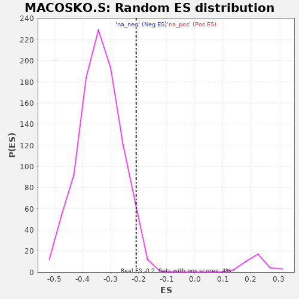

| | | Dataset | al5_v_al2 |
| Phenotype | NoPhenotypeAvailable |
| Upregulated in class | na_neg |
| GeneSet | MACOSKO.S |
| Enrichment Score (ES) | -0.2085509 |
| Normalized Enrichment Score (NES) | -0.6167423 |
| Nominal p-value | 0.9595436 |
| FDR q-value | 0.893426 |
| FWER p-Value | 1.0 |
Table: GSEA Results Summary
 Fig 1: Enrichment plot: MACOSKO.S
Fig 1: Enrichment plot: MACOSKO.S
Profile of the Running ES Score & Positions of GeneSet Members on the Rank Ordered List
| PROBE | GENE SYMBOL | GENE_TITLE | RANK IN GENE LIST | RANK METRIC SCORE | RUNNING ES | CORE ENRICHMENT | | 1 | Mycbp2 | | | 47 | 0.217 | 0.0401 | No |
| 2 | Ogt | | | 54 | 0.210 | 0.0868 | No |
| 3 | Neat1 | | | 140 | 0.155 | 0.1056 | No |
| 4 | Ube2c | | | 166 | 0.147 | 0.1341 | No |
| 5 | Srsf5 | | | 194 | 0.137 | 0.1600 | No |
| 6 | Tnpo2 | | | 461 | 0.085 | 0.1276 | No |
| 7 | Usp16 | | | 598 | 0.069 | 0.1169 | No |
| 8 | Ints7 | | | 745 | 0.056 | 0.1013 | No |
| 9 | Phip | | | 972 | 0.040 | 0.0664 | No |
| 10 | Tubb4b | | | 979 | 0.039 | 0.0742 | No |
| 11 | Ezh2 | | | 983 | 0.039 | 0.0825 | No |
| 12 | Cers6 | | | 1091 | 0.033 | 0.0692 | No |
| 13 | Eif4ebp2 | | | 1236 | 0.024 | 0.0466 | No |
| 14 | Cdkn2aip | | | 1334 | 0.018 | 0.0320 | No |
| 15 | Pola1 | | | 1356 | 0.018 | 0.0319 | No |
| 16 | Dnajb4 | | | 1584 | 0.007 | -0.0107 | No |
| 17 | Zwint | | | 1676 | 0.002 | -0.0280 | No |
| 18 | Dync1li2 | | | 1750 | -0.002 | -0.0417 | No |
| 19 | Txnrd1 | | | 1903 | -0.010 | -0.0691 | No |
| 20 | Txndc9 | | | 2080 | -0.016 | -0.0995 | No |
| 21 | Tyms | | | 2097 | -0.017 | -0.0987 | No |
| 22 | Ccdc84 | | | 2102 | -0.017 | -0.0955 | No |
| 23 | Calm2 | | | 2284 | -0.025 | -0.1249 | No |
| 24 | Sp1 | | | 2296 | -0.026 | -0.1212 | No |
| 25 | Tsn | | | 2514 | -0.035 | -0.1553 | No |
| 26 | Crebzf | | | 2615 | -0.040 | -0.1657 | No |
| 27 | Slc38a2 | | | 2667 | -0.042 | -0.1660 | No |
| 28 | Rfc2 | | | 2729 | -0.045 | -0.1676 | No |
| 29 | Dna2 | | | 2923 | -0.054 | -0.1929 | Yes |
| 30 | Crls1 | | | 2934 | -0.055 | -0.1824 | Yes |
| 31 | Fen1 | | | 2945 | -0.055 | -0.1718 | Yes |
| 32 | Rsrc2 | | | 3035 | -0.059 | -0.1756 | Yes |
| 33 | Rmi1 | | | 3175 | -0.066 | -0.1878 | Yes |
| 34 | Tmpo | | | 3283 | -0.070 | -0.1925 | Yes |
| 35 | Nfe2l2 | | | 3292 | -0.071 | -0.1780 | Yes |
| 36 | Top2a | | | 3329 | -0.073 | -0.1683 | Yes |
| 37 | Tsg101 | | | 3520 | -0.083 | -0.1864 | Yes |
| 38 | Zfp207 | | | 3544 | -0.085 | -0.1717 | Yes |
| 39 | Prim1 | | | 3594 | -0.087 | -0.1614 | Yes |
| 40 | Ubl3 | | | 3706 | -0.093 | -0.1617 | Yes |
| 41 | Ube2d3 | | | 3738 | -0.095 | -0.1461 | Yes |
| 42 | Coq9 | | | 3741 | -0.095 | -0.1249 | Yes |
| 43 | Svip | | | 3927 | -0.108 | -0.1362 | Yes |
| 44 | Uaca | | | 3933 | -0.109 | -0.1124 | Yes |
| 45 | Rrm1 | | | 3940 | -0.109 | -0.0887 | Yes |
| 46 | Gclm | | | 3954 | -0.111 | -0.0661 | Yes |
| 47 | Lmo4 | | | 3956 | -0.111 | -0.0411 | Yes |
| 48 | Dhfr | | | 3965 | -0.112 | -0.0172 | Yes |
| 49 | Tubb5 | | | 3977 | -0.113 | 0.0064 | Yes |
| 50 | Ywhah | | | 3996 | -0.115 | 0.0290 | Yes |
| 51 | Usp1 | | | 4102 | -0.122 | 0.0364 | Yes |
| 52 | Rpa2 | | | 4181 | -0.128 | 0.0504 | Yes |
| 53 | Hells | | | 4434 | -0.158 | 0.0373 | Yes |
| 54 | Atad2 | | | 4632 | -0.190 | 0.0421 | Yes |
| 55 | Man1a2 | | | 5027 | -0.299 | 0.0334 | Yes |
Table: GSEA details [plain text format]

Fig 2: MACOSKO.S: Random ES distribution
Gene set null distribution of ES for MACOSKO.S